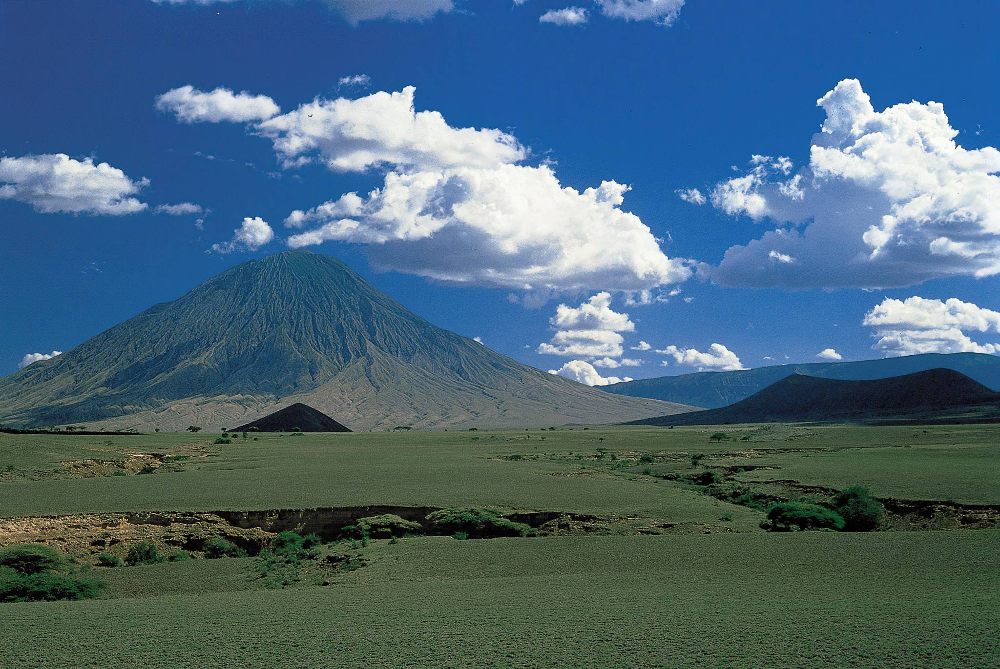
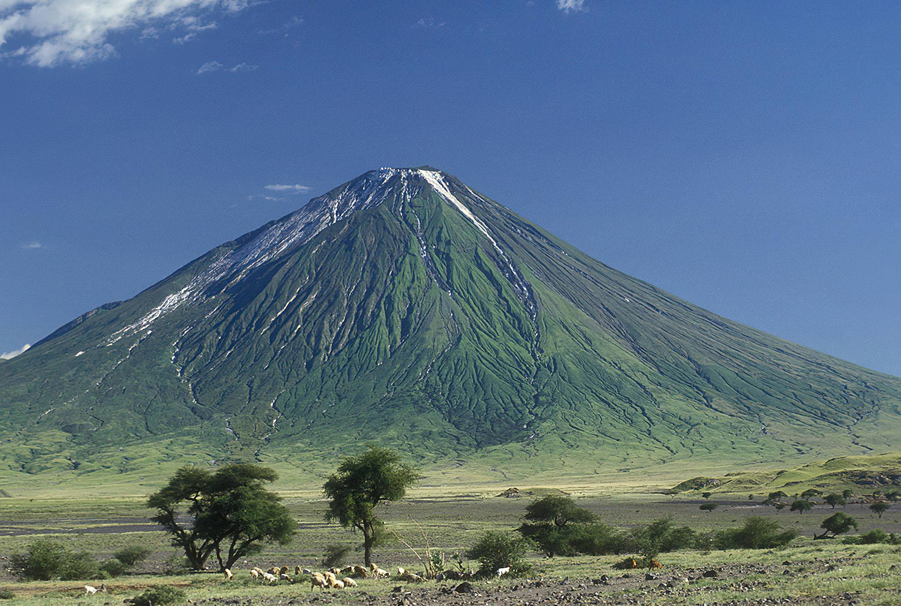
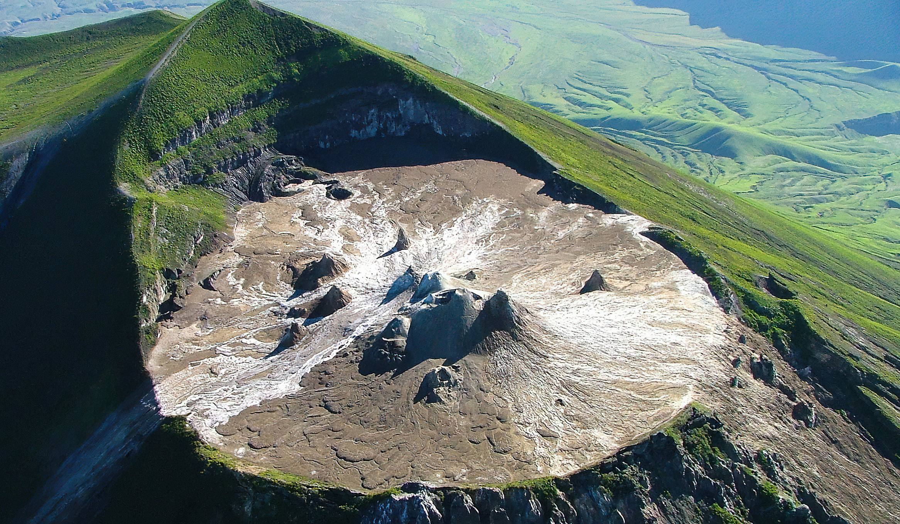

"Oldoinyo Lengai" means “The Mountain of God” in the Maasai language. The summit of this strato-volcano is 2962 metres above sea level, and affords direct views into the caldera of Tanzania’s only officially-certified active volcano, and the world’s only carbonatite volcano; records of eruptions have been maintained since 1883, the largest of which deposited ash 120 from Arusha Town and 100 kilometres away in Loliondo on the Kenyan border to the north west.
It is located in northern Tanzania lying just south of Soda Ash Lake Natron in the Rift Valley, in the heart of Maasai country, and locally regarded as a sacred mountain. Looking north from it’s summit crater, the hot barren salt flats of Lake Natron stretch into the distance. To the south stretch the crater Highlands and the Ngorongoro Game Reserve. The eastern horizons dominated by Kilimanjaro and to the west the forested escarpments and hills comprising the western slopes of the Rift Valley. Every seven years Lengai erupts and plumes of smoke billow out of the crater.
It is possible to walk across the crater floor. The ascent of Oldoinyo Lengai is demanding on account of the day time heat, lack of water, steep and unsuitable slopes of ash and crumbly rocks and considerable height gain. Normally you can start ascending to summit early in the morning and reach to summit at sunrise. Short and a warm jacket are suitable for ascent, also long trousers are good as the summit before dawn can be cold. Access route from the North West allows an early descent to be made from the summit in the morning shadow.
Best time to visit: Year-round - enquire for seasonal highlights
Recommended duration: 1 - 3 days recommended
Entry cost: Park fees vary - contact us for current rates


Safari Packages

2 Days Ol Doinyo Lengai Mountain Climbing
Price on request
The 2 Days Ol Doinyo Lengai Mountain Climbing will take you to this active Volcano known as the mountain of God, Ol Doinyo Lengai will give you the best adventure safari as you exp
View Itinerary
2 Days Safari to Lake Natron and Mount Oldoinyo Lengai
Price on request
Enjoy the 2 Days Lake Natron Tour in Tanzania as you visit this home to 2 million of lesser flamingos as well as visit to Mount Oldoinyo Lengai and the views along the road to get
View Itinerary
3 Days Ol Doinyo Lengai Mountain Climbing
Price on request
The 3 Days Ol Doinyo Lengai Mountain Climbing will take you to this active Volcano known as the mountain of God, Ol Doinyo Lengai will give you the best adventure safari as you exp
View Itinerary
5 Days Zanzibar Beach Holiday
From $1,450 / person
Stone Town culture, spice farms and Indian Ocean beach relaxation - the perfect post-safari unwind.
View Itinerary
7 Days Rift Valley Adventure to Engaruka, Lake Natron, Ol Donyo Lengai, Lobo, Serengeti and Ngorongoro
Price on request
This best great rift adventure you will travel thru the Great Rift Valley to the Northern tour sites of Tanzania for 1 night Engaruka ruins, 2 nights Lake Natron and Oldoinyo Lenga
View Itinerary
8 Days Hiking to Ngorongoro Highlands and Oldoinyo Lengai Trekking
Price on request
This 10 day trekking tour takes you to the diverse landscapes of the Ngorongoro Crater Highlands - Ngorongoro, Olmoti and Empakaai - eventually leading to Lake Natron where you hav
View Itinerary
Day Trip to Lake Natron
From $638 / person
Enjoy the 1 or 2 Days Lake Natron Tour in Tanzania as you visit this home to 2 million of lesser flamingos, The lake is in the vicinity of Ol Doinyo Lengai, which is visible on the
View ItineraryReady to explore Mount Ol’doinyo Lengai?
Request a Quote